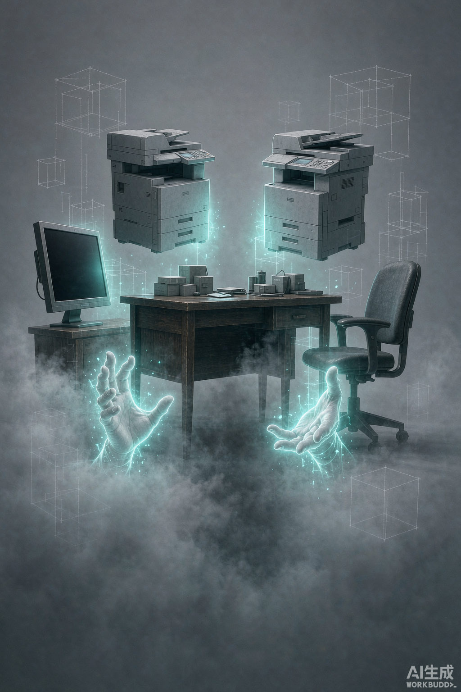
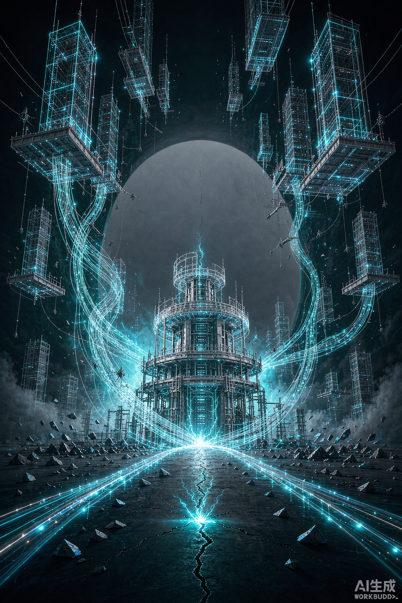
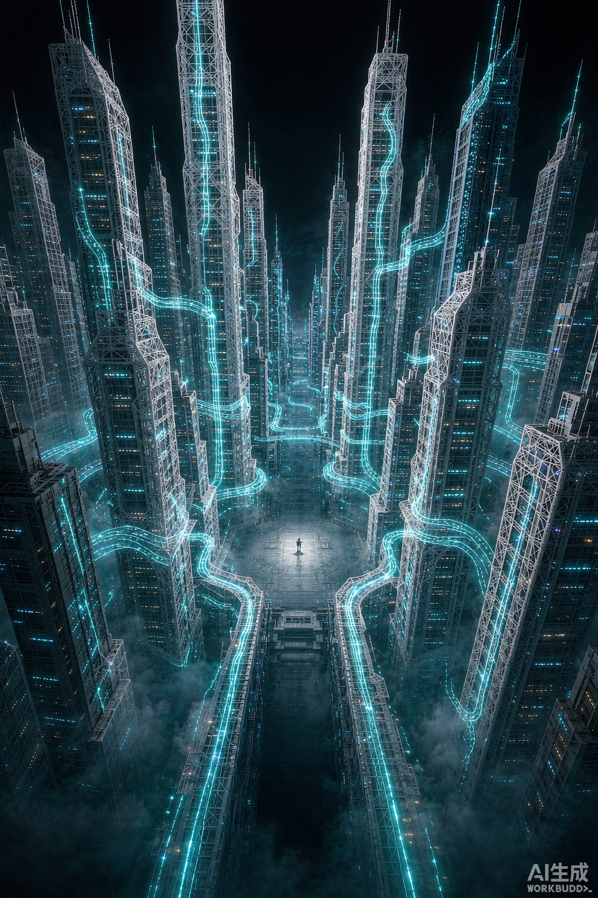

先读这一条：本批是「视觉方向探针」，不是成片。
32 号分镜要求的是 30 秒 / 15 镜的完整概念片。这里交付的是其中三个最贵的镜头各 5 秒，
目的是拿到「星河的视觉语言长什么样」的实物，供制作方估价用。
每段都是 单镜不切，符合 32 §三「即使是短版也不许有剪辑点」的硬要求。
32 号分镜要求的是 30 秒 / 15 镜的完整概念片。这里交付的是其中三个最贵的镜头各 5 秒，
目的是拿到「星河的视觉语言长什么样」的实物，供制作方估价用。
每段都是 单镜不切，符合 32 §三「即使是短版也不许有剪辑点」的硬要求。
SHOT 01
① ② ③ ④
对应分镜 4–8 ／ 0:07–0:13
静帧 · 仪式起点

动镜 · 5.04s
画面办公室还在，身后的世界已卸载成灰白线框；看不见身体，只有两只泛着青色微光的双手
为什么关键这是三条铁律里「视界只给眼睛，不给手」的唯一画面化——身体消失，手留下
实拍规格1176 × 1764 · 24fps · 121 帧 · 5.042s
声音：环境音被抽干，60Hz 次声波嗡鸣起；本镜是纯静默与低频，无配乐
SHOT 02
⑤ 城市升起
对应分镜 9 ／ 0:13–0:24
静帧 · 封面帧（32 §六 指定）

动镜 · 5.04s
画面虚空从中心裂开，光丝涌出、交织、先在脚下铺成一条路，路的尽头第一栋建筑从地面里长出来
为什么关键32 开篇第一问：这看起来是「生长」还是「特效堆砌」？——这 5 秒就是答案
实拍规格1176 × 1764 · 24fps · 121 帧 · 5.042s
抽帧核验5% 处塔仍在建（未封顶）→ 90% 处已落成点亮，生长过程真实发生
声音：白噪音从杂乱「调音」成和谐和弦，到顶后骤停（32 §四.2）
SHOT 03
⑤ 尾 ／ ⑥ 前
对应分镜 14 ／ 0:27–0:28.5
静帧 · 全景

动镜 · 5.04s
画面光带在建筑之间持续流动，整座城市在呼吸；他站在正中央的街道上，很小
为什么关键「光带流动」是 32 §五 技术难点清单第 2 项，也是整季复用资产的主体
实拍规格1176 × 1764 · 24fps · 121 帧 · 5.042s
声音：音乐推到顶点后骤停，为 15 镜的两行字留白（32 §四.2）
产物规格核验（读容器得到的事实，非提示词复述）
| 项 | 分镜要求（32 号） | 实际产物 | 判定 |
|---|---|---|---|
| 时长 | 整片 30s（本批为单镜探针） | 5.042s × 3 | 符合「单镜不切」，非成片 |
| 画幅 | 竖屏 9:16 = 0.5625 | 1176 × 1764 = 0.6667（2:3） | 偏差 +18.5%（偏宽），见下 |
| 帧率 / 帧数 | — | 24fps / 121 帧 | 正常 |
| 音轨 | 需有（静默段落是本片卖点） | 2 轨（视频 + 音频） | 已含 |
| 静帧 | 竖屏 | 1024 × 1536（2:3） | 同上 |
| 9:16 可行性 | 竖屏 9:16 | 实测输出 1072 × 1920 = 0.5583 | 与 9:16 仅差 0.7% |
关于画幅（必须处理的一件事）
本批 6 件资产实际是 2:3（0.6667），比 32 号要求的竖屏 9:16（0.5625）宽 18.5%。
原因是静帧生成时按 1024×1536 出图，视频沿用底图比例。
已实测：把尺寸写成
所以这是可修的，不是做不到。重跑 3 静帧 + 3 视频即可统一到 9:16。
现留一张 9:16 版本作样张：
本批 6 件资产实际是 2:3（0.6667），比 32 号要求的竖屏 9:16（0.5625）宽 18.5%。
原因是静帧生成时按 1024×1536 出图，视频沿用底图比例。
已实测：把尺寸写成
1080x1920 时工具能出 1072x1920（差 0.7%，可接受）——所以这是可修的，不是做不到。重跑 3 静帧 + 3 视频即可统一到 9:16。
现留一张 9:16 版本作样张：
frames/02_city-rising_1072x1920_9x16-test.png
本批未覆盖的分镜（留给后续）
| 分镜 | 内容 | 为什么这轮没做 |
|---|---|---|
| 1–3, 6 | 黑屏键盘声 / 水泼向键盘 / 三下敲击 | 前两镜是实拍质感镜头，第三镜靠音效而非画面 |
| 7 | 瞳孔特写：青色数据流炸开 | 需要真人物面部，静帧生成的角色一致性还不稳 |
| 10–12 | 快闪 · 二十人 / 五十扇门 / 放行 | 0.8 秒快闪，单段 5 秒生成器做不出这种节奏，属于剪辑工作 |
| 13 | 快闪 · 收尸人（第三卷核心形象） | 值得单独做，且涉及角色设计，建议下一批专做 |
| 15 | 城门浮出 SYSTEM ONLINE | 是字幕工序，不是生成工序；按 32 §六 要求「不能给特写」 |